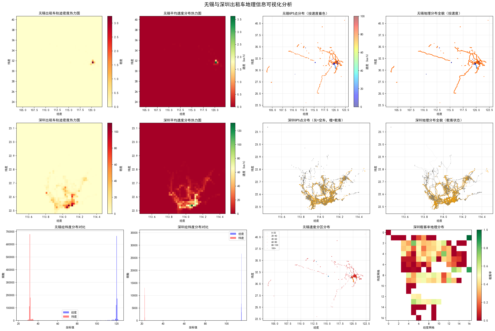

分析 · 综合
真实数据 · 无锡与深圳多维度地理信息对比（密度热力图、速度分布、GPS 散点、经纬度分布等）。无锡的地理范围明显大于深圳市域；深圳的数据密度更高、路网更完整。
三份数据，三种"分辨率"
把北京、深圳、无锡摆在一起看，它们不是简单的"三个城市"，而是三个不同技术代际的轨迹采集样本： 北京代表"能采到什么"，深圳代表"运营状态知道了什么"，无锡代表"车载传感器能告诉你什么"。 这一页先把它们放在一个天平上称一称。
能力光谱：从"位置"到"行为"
每多一列字段，就多一层能回答的问题：
三份数据的能力阶梯：越往右，字段越丰富，但对数据质量的要求也越高。
| 维度 | 北京 | 深圳 | 无锡 |
|---|---|---|---|
| 时间 | 2008-02 一周 | 2014-10-22 单日 | 2020-07（数据）/ README 说 2022 |
| 采样间隔 | 约 10 分钟 | 约 90 秒 | 30–60 秒 |
| 核心字段 | id, 时间, lon, lat | + passenger, speed | + 方向/速度/三轴加速度/横摆角速度 |
| 最小记录单元 | 一辆车一周一个文件 | 一小时一个文件 | 日文件 |
| 最能答的问题 | 空间分布、轨迹形态、OD 估算 | 空驶率、载客热点、速度画像 | 驾驶行为、路况、驻车探测 |
| 最大限制 | 没有载客/速度 | 无跨天，时间字段缺日期 | 行驶段 IMU 疑似常量填充；范围跨省 |
地理分布：不同城市的"轮廓"
下图来自仓库原始可视化脚本，把无锡与深圳放在同一套地理框架下对比。你可以看到： 深圳的轨迹像一张细密的网（城市建成区连续、单小时数据量巨大）； 无锡的轨迹更像几根散落的线（且包含跨省的长途轨迹，因为数据范围远超无锡本身）：

🧭
对比的启示
同样是"出租车轨迹"，深圳能直接画出城市路网的毛细血管，而无锡的数据更像跨省干道的探针。 这不是城市差异，而是数据来源与采样策略差异。做分析前，永远先问：这份数据到底覆盖多大的空间？
选数据集 = 选问题
下面这个决策表帮助你根据研究目标选合适的数据：
| 你想回答什么 | 首选数据 | 为什么 |
|---|---|---|
| 典型出租车一天怎么移动？驻车段在哪里？ | 北京 T-Drive | 一周连续、单车文件、时间跨度长 |
| 哪里的空车多、哪里的载客多？一天中供需怎么变化？ | 深圳 | 有 passenger 字段，能区分空载/载客 |
| 城市里哪些路经常堵、速度分布如何？ | 深圳 | 速度字段 + 高时间密度 |
| 司机是否急刹急转弯？某段路是否颠簸？ | 无锡（谨慎） | 有加速度和横摆角速度；但行驶段数据可疑 |
| 全国尺度的大动脉 / 跨城 OD | 无锡（裁剪前） | 范围覆盖大半个中国，但需按边界清洗 |